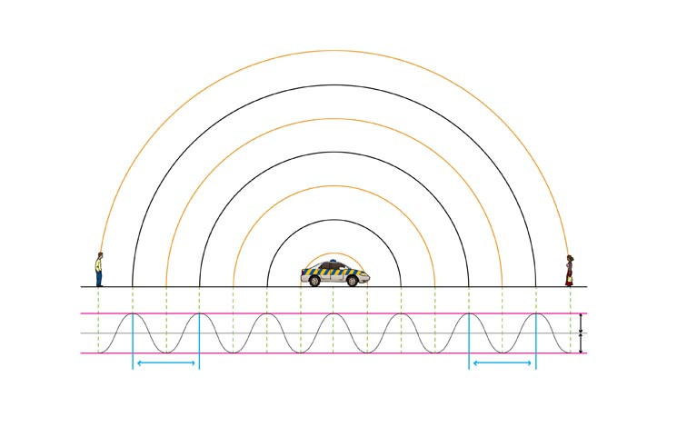
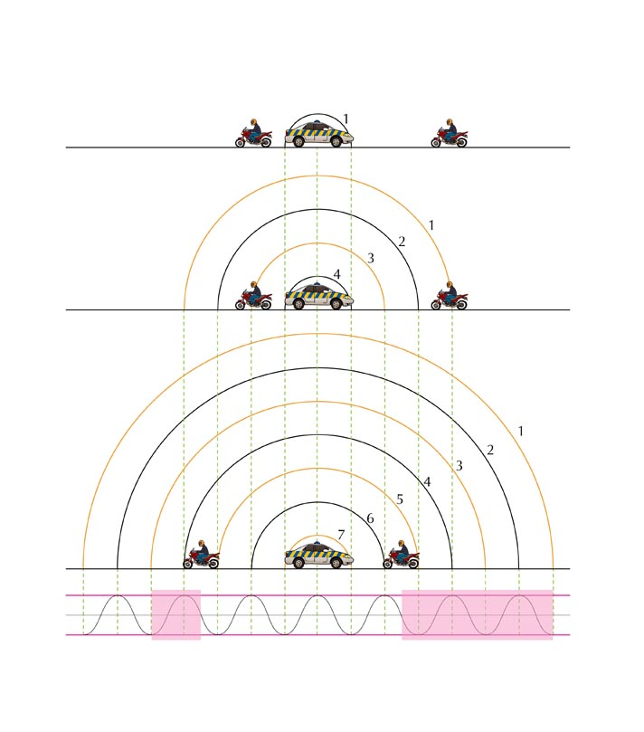
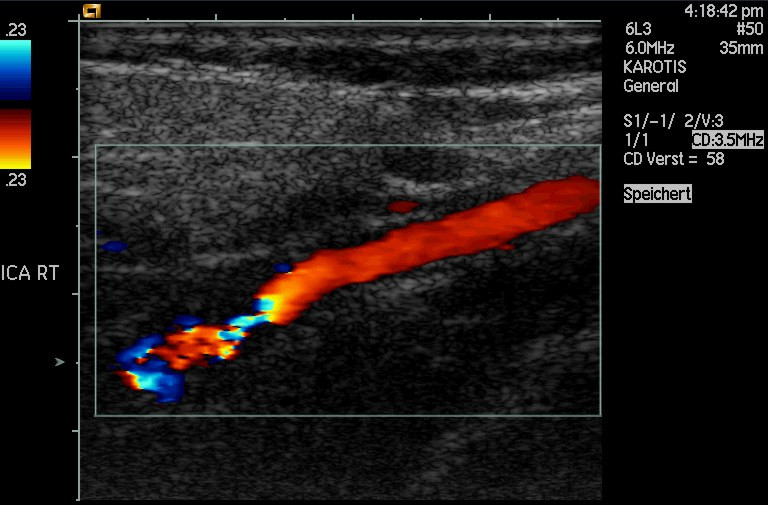

Have you noticed how the pitch of a police car or ambulance siren changes as it
passes where you are standing. Or how an approaching car or train sounds different
to when it is tavelling away from you? If you haven't, try to do an experiment
by paying extra careful attention the next time it happens to see if you can notice a difference.
This doesn't apply to just vehicles and trains but anything that emits waves, be those sound waves
or light (electromagnetic waves).
The effect actually occurs if you move towards or away from the source of the sound as well.
This effect is known as the Doppler effect and will be studied in this chapter.
Creating the Doppler effect in class
You can create the Doppler effect in class. One way of doing this is to get:
string, and
a tuning fork.
Tie the string to the base of the tuning fork. Strike the tuning fork to create a note and then hold the other end of the string and swing the tuning fork in circles in the air in a horizontal plane.
The string needs to be very securely tied to the tuning fork to ensure that it does not come loose during the demonstration.
The class should be able to hear that the frequency heard when the tuning fork is moving is different to the frequency heard when it is stationary.
The Doppler effect is named after Johann Christian Andreas Doppler (29 November 1803 - 17 March 1853), an Austrian mathematician and physicist who first explained the phenomenon in 1842.
Units and unit conversions — Physical Sciences, Grade 10, Science skills
Equations — Mathematics, Grade 10, Equations and inequalities
The Doppler effect with sound
You, the person hearing the sounds, are called the observer or listener and the thing emitting the sound is called the source. As mentioned in the introduction, there are two situations which lead to the Doppler effect:
When the source moves relative to the observer.
When the observer moves relative to the source.
In fact, both the source and the observer can be moving at the same time but we won't deal with that case in this chapter.
Doppler effect
The Doppler effect occurs when a source of waves and/or observer move relative to
each other, resulting in the observer measuring a different frequency of the waves
than the frequency that the source is emitting.
The question that probably comes to mind is: "How does the Doppler effect come about?". We can understand what is happening by thinking through the situation in detail.
Case 1: Moving source, stationary observer
Let us consider a source of sound waves with a constant frequency and amplitude.
The sound waves can be represented as concentric circles where each circle represents
a creast or peak as the wavefronts radiate away from the source. This is because
the waves travel away from the source in all directions and the distance between
consecutive crests or consecutive troughs in a wave is constant (the wavelength
as we learnt in Grade 10). In this figure the crests are represented by by the
black lines and the troughs by the orange lines.

Stationary sound source as more wavefronts are emmitted.
The sound source is the police car in the middle and is stationary. For
the Doppler effect to take place (manifest), the source must be moving
relative to the observer. Let's
consider the following situation: The source emits one wave (the circle
represents the creat of the wave) that moves away from the source at the
same rate in all directions. The distance between the crests represents
the wavelength of the sound. The closer together the crests, the higher
the frequency (or pitch) of the sound according to
,
where
(speed of sound) is constant.
As this crest moves away, the source also moves and then emits more crests. Now the two circles are not concentric any more, but on the one side they are closer together and on the other side they are further apart. This is shown in the next diagram.
If the source continues moving at the same speed in the same
direction, then the distance between crests on the right of the
source is constant. The distance between crests on the left is
also constant. The distance between successive crests on the left is constant
but larger than the distance between successive crests on the right.
When a car approaches you, the sound waves that reach you have a shorter wavelength and a higher frequency. You hear a higher sound. When the car moves away from you, the sound waves that reach you have a longer wavelength and lower frequency. You hear a lower sound.
NOTE: Above is a placeholder plot to be improved and higher resolution
Case 2: Moving observer, stationary source
Just as we did before, let us consider a source of sound waves with a constant
frequency and amplitude.
There are two observers, one on the left
that will move away from the source and one on the right that will move towards the source.
We have three diagrams. The
first diagram describes the overall situation, the second diagram shows the situation
some time interval later and the third diagram is after another time interval.
The wavefronts are numbered so you can see how they
move further away and so that we can track which ones an observer has measured.
NOTE: Above is a placeholder plot to be improved and higher resolution
The observers can hear the waves emitted by the police car and after the first
time interval they start to move.
NOTE: Above is a placeholder plot to be improved and higher resolution
It is important to remember that the frequency is the number of points
that are in phase (for example crests or troughs) that pass a point
(observer) in one second. We can compare the frequency the two observers
measure but just counting how many wavefronts (these are all in phase)
they measure in the time interval that has passed.
In the time interval that passed, the observer moving towards the
police car observed the crests and troughs numbered 1 through 5 (the portion
of the wave is highlighted below). The observer moving away encountered a
smaller portion of the wavefront but in the same time interval. To the observers
this will mean that the frequency they measured is different.

NOTE: Above is a placeholder plot to be improved and higher resolution
The motion of the observer will alter the frequency of the measured sound from a stationary source:
An observer moving towards the source measures a higher frequency.
An observer moving away from the source measures a lower frequency.
It is important to note that we have only looked at the cases where the source and observer are moving directly towards or away from each other and these are the only cases we will consider.
We didn't actually need to analyse both cases. We could have used either explanation because of relative motion. The case of a stationary source with moving observer is the same as the case of the stationary observer and the moving source because the relative motion is the same. Do you agree? Discuss with your friends and try to convince yourselves that this is the case. Being able to explain work to each other will help you understand it better. If you don't understand it, you won't be able to explain it convincingly.
For a real conceptual test, discuss what you think will happen if the source and the observer are both moving, in the same direction and at the same speed.
The formula that provides the relationship between the frequency emitted by the
source and the frequency measured by the listener is:
where
is the frequency perceived by the observer (listener),
is the frequency of the source,
is the speed of the waves,
the speed of the listener and
the speed of the source.
Note: The signs show whether or not the relative motion of the source and observer is towards each other or away from each other:
The siren of an ambulance emits sound with a frequency of
~
.You are standing on the pavement. If the ambulance drives past you at a speed of
~
,what frequency will you hear, when
a) the ambulance is approaching you
b) the ambulance is driving away from you
Take the speed of sound in air to be
~
.
Step: Analyse the question
The question explicitly asks what frequency you will hear when the source is moving at a certain speed. This tells you immediately that the question is related to the Doppler shift. The values given in the question are all in S.I. units so no conversions are required.
Step: Determine how to approach the problem based on what is given
We know that we are looking for the observed frequency with a moving source. The change is frequency can be calculated using:
To correctly apply this we need to confirm that it is valid and determine what signs we need to use for the various speeds. The observer is not moving but we have to consider two different cases, when the ambulance is moving towards the observer (a) and away from them (b).
We have been told that if the source is moving towards the observer then we will use subtraction in the denominator and if it is moving away, addition. This means:
Determine Step
when ambulance is approaching
Determine
when ambulance has passed
Moving observer
What is the frequency heard by a person driving at
~
toward a factory whistle that is blowing at a frequency of
~
.Assume that the speed of sound in air is
~
.
A train approaches a station at a constant speed of
~
with its whistle blowing at a frequency of
~
.An observer, standing on the platform, hears a change in pitch as the train approaches him, passes him and moves away from him.
Name the phenomenon that explains the change in pitch heard by the observer.
(1 mark)
Calculate the frequency of the sound that the observer hears while the train is approaching him. Use the speed of sound in air as
~
.
(4 marks)
How will the observed frequency change as the train passes and moves away from the observer? Write down only INCREASES, DECREASES or REMAINS THE SAME.
(1 mark)
How will the frequency observed by the train driver compare to that of the sound waves emitted by the whistle? Write down only GREATER THAN, EQUAL TO or LESS THAN. Give a reason for the answer.
(2 marks)
[TOTAL: 8 marks]
Ultrasound and the Doppler effect
Ultrasonic waves (ultrasound) are sound waves with a frequency greater than
~
(the upper limit of human hearing). These waves can be used in medicine to determine the direction of blood flow. The device, called a Doppler flow meter, sends out sound waves. The sound waves can travel through skin and tissue and will be reflected by moving objects in the body (like blood). The reflected waves return to the flow meter where its frequency (received frequency) is compared to the transmitted frequency.
Because of the Doppler effect, blood that is moving towards the flow meter will change the sound to a higher frequency and blood that is moving away from the flow meter will cause a lower frequency.
Ultrasound can be used to determine whether blood is flowing in the right direction in the circulation system of unborn babies, or identify areas in the body where blood flow is restricted due to narrow veins. The use of ultrasound equipment in medicine is called sonography or ultrasonography.

Colour Doppler imaging of cervicocephalic fibromuscular dysplasia